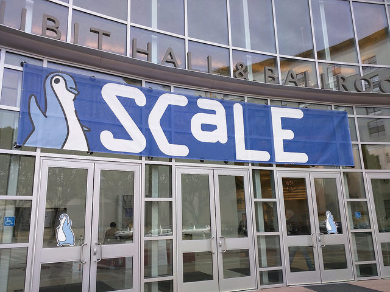
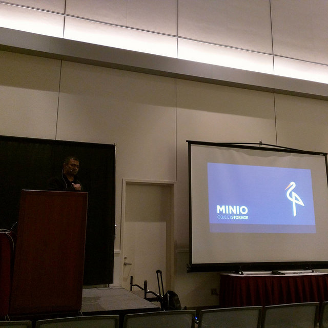
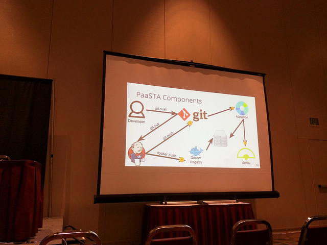

Between March 2nd and 5th, over three thousand open source enthusiasts descended on Pasadena, California for the Southern California Linux Expo. The schedule drew professionals and hobbyists alike to talk about everything from specific projects like Ubuntu and PostgreSQL; to open source use cases in education and entertainment; to tracks on containers, DevOps and open data.

On March 2nd I ran an Open Infrastructure Day with Spencer Krum of IBM, where we promoted and shared various projects that are running with all or part of their infrastructures maintained in the open. We heard from infrastructure engineers at OpenStack, Jenkins, the Apache Software Foundation, and others about their tooling and recommendations for operating projects in the open. The afternoon was spent in an unconference covering topics like handling donations, CI systems, and using containers. Spencer wrote an article about the event here, and I go into more detail in an article here (on OpenSource.com).
On Saturday afternoon, just before giving my talk on “Listening to the Needs of Your Global Open Source Community”, I attended a talk by Anand Babu Periasamy on “Minio: An open source alternative to AWS S3”. We’re using Minio in our Fast Data: Application Logs and Fast Data: Sensor Analytics demos for DC/OS, so I was interested in learning more about the background, goals and future of the project. Minio, a minimalist distributed object storage server that is fully S3-compatible has has a strong focus on simplicity. With a belief that only simple systems can scale well, Minio prioritizes stability and S3-compatibility so that cloud operators have an open source option. In contrast to object storage projects like Swift, Minio isn’t planning to add additional back ends or plugins, or to extend the product beyond the basic mandate. The Minio team wants users to be able to seamlessly move between S3 and Minio, without being locked into either. We used it in our demos because we value this simplicity; it satisfies our need for a cloud-focused object storage while remaining simple for demos, and scalable for production environments.

There was an entire track on Thursday, Saturday and Sunday devoted to Containers and Virtualization. Of particular interest to me, on Sunday I attended Josh Berkus’ “State: That’s What’s Happening” where (with a focus on Kubernetes though largely transferrable to DC/OS) he walked the audience through various stateful-services concerns. He reviewed types of stores, how orchestration tooling needs microservice-state awareness, and demonstrated Kubernetes in combination with different storage options. Slides from his talk are available here.
In the final talk of the conference, we heard from Nathan Handler who spoke on “Automatically Scaling Mesos Services and Clusters at Yelp”. He began his talk by walking the audience through several iterations of Yelp’s infrastructure, and how the current iteration reduces costs, using Apache Mesos to intelligently balance workloads across nodes. Instead of using DC/OS, he presented tooling developed in house at Yelp called PaaSTA, which uses familiar tooling of Marathon, Chronos, Jenkins, Docker, Git, and Sensu to build a continuously deployment platform on Mesos.

During his talk Nathan shared some of Yelp’s reasons for building their own platform rather than using something like DC/OS, and after the conference he was able to take some time for me to expand upon their rationale:
“We began coming up with the plan for PaaSTA back in July 2014. DC/OS Enterprise GA didn’t happen until June 2015, which is also when the free community edition launched. By that time, we had already put quite a bit of work into tailoring PaaSTA (which used mesos/marathon) to our specific needs. We opted for mesos because it was a clear leader in its field at the time. Marathon was chosen because it was designed to do one thing, but do it well. We also generally tend to opt towards the free/open source versions of tools or developing them ourselves rather than paying for a closed enterprise version. This is to allow us the flexibility/control to manage all aspects of our infrastructure and fix our own problems rather than being dependent on a third party.”
Like many companies, Yelp found that open source was key to the strategy they employed and then built tooling around what they needed from Mesos and Marathon, which they already found value in. Timing of the DC/OS release wasn’t right for them, but he went on to share:
“we continue to run PaaSTA because it has grown and evolved into a tool that is heavily tailored for our specific needs/workflows while still allowing us to benefit from the DC/OS work that trickles down into the mesos frameworks.” Slides from his talk can be found here.
This year at SCaLE I noticed a trend toward forward-thinking talks, exemplified in keynotes by Christine Corbett Moran (“Open Source Software as Activism”) and Karen Sandler (“In the Scheme of Things, How Important is Software Freedom?”). Each took a close look at our open source communities and the work we’re doing, and the ways we are doing it. The code is important, but so are the methods we’re using to build and preserve communities, and the positive intent behind our work. SCaLE was a serious and inspiring look into efforts that so many of us are spending in open source spaces, and I’m excited to return next year.
You can read more about my experience at SCaLE 15x on my personal blog here.